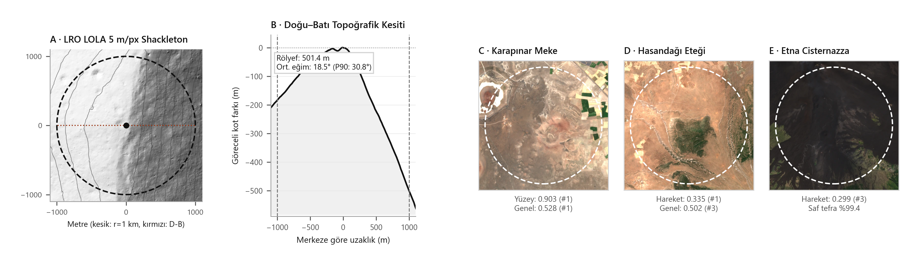
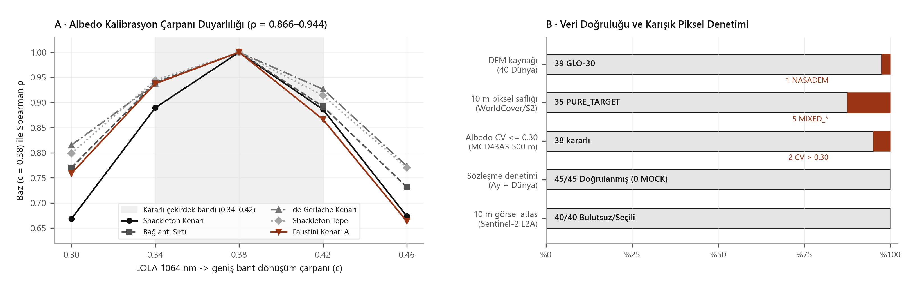
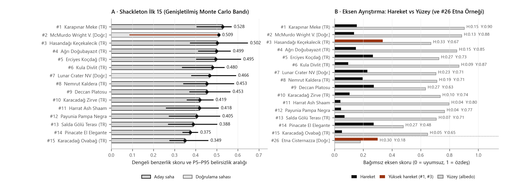
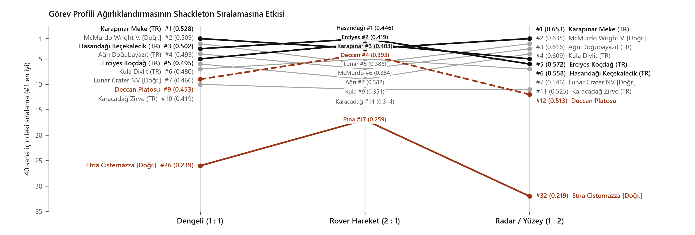
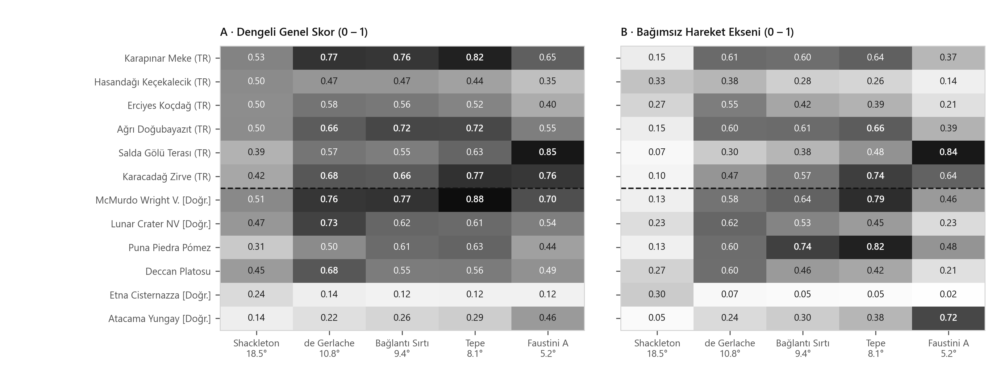
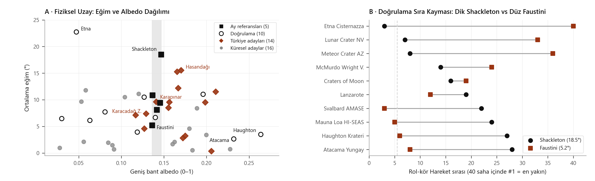

Yeryüzünde tek başına hiçbir saha Ay'ı veya Mars'ı tümüyle kopyalayamaz. Bu çalışma, tekil puan ortalamaları yerine fiziksel eksenleri ayırarak her sonuca ölçüm belirsizliği, kırılma sınırı ve görev profili bağlayan şeffaf bir test sahası seçim ve portföy sistemi sunar

| Klasik Yaklaşım Sorunu | Uygulanan Algoritmik Çözüm | Sağlanan Mühendislik Kazanımı |
|---|---|---|
| Ortalama skor aldatmacası | Eksen ayrıştırma (Hareket, Yüzey, Termal) |
Örneğin Etna Cisternazza, Hareket ekseninde 40 saha içinde #3 (0.299) iken koyu albedosu (0.047) yüzünden dengeli skorda #26'ya düşer; ayrıştırma bu sahayı görünür kılar |
| Coğrafi grid & makro eğim hatası | Metrik CRS + lstsq düzlem arındırma |
Kutupta derece gridi eğimi bozar; ham yükseklik standart sapması ise tepe eğimini pürüzlülük sanır. Düzlem eğimi çıkarılarak yalnızca yerel mikro-rölyef ölçülür |
| Belirsizliği gizleyen nokta skor | 200 çekimli Monte Carlo + expanded_interval |
Her özelliğin ölçüm hatası (X_sd) skora taşınır; McMurdo gibi kar sınırında kararsız sahalar geniş P5–P95 bandıyla ([0.088–0.513]) dürüstçe ayrılır |
| Fiziksel rejim tutarsızlığı | Bilinçli Termal Askıya Alma (Karar #30) | Ay'daki 29.53 günlük vakumlu döngü (~187 K) ile Dünya'nın 24 saatlik atmosferli günlük döngüsü (2.7–29.3 K) aynı sayısal skorda birleştirilmedi |
| Tek "en iyi" saha saplantısı | Açgözlü küme örtme (select_portfolio) |
Tek sahaya sıkışmak yerine en az aday ile tüm ulaşılabilir eksenleri örter ve Yeryüzünde hiç ulaşılamayan eşikleri açıkta bırakır |
Her algoritmik karar, gezegensel yüzey analojilerinde sık görülen istatistiksel ve fiziksel yanılgıları engellemek üzere seçilmiştir. Aşağıda boru hattındaki çekirdek yöntemlerin neden seçildiği ve hangi problemi çözdüğü özetlenir
Yedi sayısal özellik üç bağımsız fiziksel eksende toplanır: Hareket (slope_mean, slope_p90, roughness, relief), Yüzey (albedo) ve v1'de bilinçli askıda tutulan Termal (temp_amplitude, thermal_inertia). Bir sahanın eğim profili mükemmelken parlaklığı uyumsuz olabilir; eksen skorları ayrı ayrı raporlanmadan genel sıralama yapılmaz
Shackleton Krater Kenarı 89.78°S enlemindedir. EPSG:4326 derece gridinde meridyensel piksel genişliği kutupta sıfıra yaklaşır ve türev tabanlı eğimi yapay büyütür. Bu nedenle Ay sahaları doğrudan Güney Kutbu Polar Stereografik (R = 1737.4 km) CRS'de, Dünya sahaları ise merkez koordinata göre yerel UTM / UPS metre projeksiyonunda işlenir. Eğim tüm sahalarda ortak np.gradient formülüyle (arctan(hypot(dz_dx, dz_dy))) türetilir
Çözdüğü kritik sorun: Ham std(elev) hesaplamak, düzgün fakat eğimli bir krater yamacını "aşırı pürüzlü" gösterir. Bunu önlemek için her r = 1000 m çemberdeki (dx, dy, z) noktalarına np.linalg.lstsq ile en küçük kareler düzlemi uydurulup makro yamaç eğimi çıkarılır; yalnızca düzlem kalıntısının standart sapması (ddof=1) pürüzlülük olarak alınır
Dünya referans evreninin 40 sahalık dağılımında her özellik önce ddof=0 popülasyon ortalaması ve standart sapmasıyla Z-skoruna çevrilir; Ay ile Dünya arasındaki öklidyen eksen uzaklığı ve benzerlik puanı şu formülle üretilir:
exp(-D): Bazı çalışmalarda büyük farklar sabit eşikte sıfırlanır ve sıralama türevi ölür. exp(-D) her aday için kesin azalan ve pürüzsüz bir skor verir. Önemli uyarı: S_axis bir olasılık ya da yüzde güven değeri değil, yalnızca sıralama indeksidirAGENTS.md §5 veri sözleşmesi tüm gök cisimlerinde ortak fiziksel tanım şartı koşar. Ay Güney Kutbu'nda LRO Diviner (240 m) sıyırıcı güneş açısı (~1.5°) ve vakum altında 29.53 Dünya günlük sinodik döngüde Shackleton ~187 K hücre içi salınım ölçerken, Dünya MOD11A2.061 24 saatlik atmosferli döngünün yıllık ortalamasını (2.7–29.3 K) verir. Aynı tanımı zorlamak sahte bir "termal eşleşme" üreteceği için termal eksen v1'de NaN bırakılmıştır
| Referans Saha | Koordinat | Ort. Eğim ± sd | P90 Eğim | Pürüzlülük | Rölyef | Albedo ± sd |
|---|---|---|---|---|---|---|
| Shackleton Kenarı | -89.78°, -156.32° | 18.50 ± 1.51° | 30.79° | 90.43 m | 501.4 m | 0.147 ± 0.004 |
| Bağlantı Sırtı | -89.46°, -137.09° | 9.43 ± 1.89° | 16.23° | 42.47 m | 184.5 m | 0.145 ± 0.001 |
| de Gerlache Kenarı | -88.67°, -68.38° | 10.83 ± 1.72° | 18.81° | 44.96 m | 250.4 m | 0.137 ± 0.001 |
| Shackleton Yakını Tepe | -88.81°, 123.55° | 8.11 ± 1.77° | 15.27° | 32.33 m | 213.6 m | 0.142 ± 0.002 |
| Faustini Kenarı A | -87.89°, 90.00° | 5.20 ± 1.98° | 8.68° | 12.29 m | 145.2 m | 0.136 ± 0.000 |
blake2b Monte Carlo YayılımıUydu ürünlerinin kendi hata haritalarından gelen 1-sigma belirsizlikler (X_sd; örn. PGDA klon ansamblı slperr/toterr ve GLO-30 sigma_z_rel = 1.0 m) skorun dışına itilmez. Her (referans, aday) çifti için n_boot = 200 normal dağılımlı çekim yapılır. Farklı Python/OS sürümlerinde rastgelelik kaymasını önlemek amacıyla tohum değeri gömülü hashlib.blake2b anahtarından deterministik üretilir
expanded_interval gerekçesi: Ay ve Dünya ölçüm hataları doğrusal olmayan exp(-D) içinden geçerken dağılım çarpıklaşır; örneğin yüksek albedo varyanslı (albedo_sd = 0.0961) McMurdo veya asimetrik Shackleton Tepe skorlarında nominal nokta skor bazen 5.–95. yüzdelik dışına kayar. display.py içindeki expanded_interval fonksiyonu [min(score, q05), max(score, q95)] zarfını alarak noktanın kendi bandı dışında görünmesini önler
×0.38)LRO LOLA aktif lazer altimetresi LDAM_50S_1000M sıfır faz açısında (α = 0°, karşıtlık parlaması dahil, ~0.358–0.387) monokromatik yansıma ölçer; Dünya MCD43A3.061 ise kısa dalga güneş albedosudur (0.028–0.264). Doğrudan kıyaslama için LRO literatürü doğrultusunda ×0.38 ölçeği uygulanmıştır. Bu proje katsayısının sıralamayı aşırı hassaslaştırıp hassaslaştırmadığını görmek üzere c ∈ [0.30, 0.46] taraması çalıştırıldı (Şekil 2a)
Mühendislik ekibinin test amacı değiştikçe ağırlık vektörü değişir: Dengeli (1:1), Rover Hareket (2:1) ve Radar / Yüzey (1:2) (Streamlit'te isru_ice ön ayarı ekli olup v1'de buz verisi olmadığı için Web arayüzünde sadeleştirilmiştir). select_portfolio algoritması ise verilen eşikte (min_score = 0.70) en çok kapsanmamış ekseni ekleyen adayı adım adım seçer

c değeri %±10 aralığında (0.34–0.42) oynadığında Shackleton için sıralama korelasyonu ρ = 0.886–0.889, Bağlantı Sırtı için 0.892–0.940 ve de Gerlache için 0.926–0.937 düzeyinde korunur. Ancak aşırı uçlarda (c = 0.30 → Ay albedosu 0.116) Deccan/Tendürek gibi daha koyu sahalar öne geçer; bu sınır data_sources_moon.md içinde açıkça kayıtlıdır
Projedeki her sayısal hücre, doğrulanmış açık NASA / ESA / Copernicus uydu ürünlerinden otomatik çekilir. Sözleşme denetleyicisi scripts/validate_all.py --fail-on-mock çalıştırıldığında hem features_moon.parquet (5 satır) hem de features_earth.parquet (40 satır) için 0/45 MOCK, 0 hata, 0 uyarı verir ve tüm 51 birim test (pytest) sıfır hatayla geçer
| Cisim | Değişkenler | Doğrulanmış Uydu Ürünü (_src) |
Yerel Çözünürlük | Doğrulama ve Özel Teknik Not |
|---|---|---|---|---|
| Ay | Eğim, P90, Pürüzlülük, Rölyef | LRO_LOLA_PGDA_*_5mpp_v2021 |
5.0 m | NASA GSFC PGDA Ürün 78 (Barker vd., 2021); piksel hata haritaları (slperr, toterr) + 200 bootstrap |
| Ay | Albedo | LRO-L-LOLA-4-GDR-V1.0 (LDAM_50S) |
1000.0 m | 1064 nm sıfır faz yansıması; Earth ile birim uyumu için ×0.38 geniş bant dönüşümü |
| Dünya | Eğim, P90, Pürüzlülük, Rölyef (39 saha) | Copernicus_DEM_GLO-30 |
30.0 m | Airbus DGED EGM2008; resmi LE90 < 2.0 m spesifikasyonundan sigma_z_rel = 1.0 m |
| Dünya | DEM Yedeği (1/40 saha) | NASADEM_HGT_v001 |
30.0 m | Ağrı (N39 E044) GLO-30 arşivinde 404 döndüğü için EGM96 yedeği tetiklendi; göreli türev etkilenmez |
| Dünya | Albedo (40 saha) | MODIS MCD43A3.061 |
500.0 m | Albedo_BSA_shortwave (5×5 piksel); ayrıca 6 sahada MCD43A4.061 (Liang 2001, NDSI < 0.40) ile çapraz doğrulandı |
| Dünya | Sıcaklık (Arşiv, v1'de skora girmez) | MOD11A2.061_annual_mean |
1000.0 m | 2024 tam yıl 24 kompozit (QC <= 1, yarımküre yanlılıksız); thermal eksen Karar #30 gereği askıda |
Veri doğruluğu yalnızca ürün adıyla bitmez: (1) Çözünürlük uçurumu: Ay DEM'i 5 m/px iken Dünya DEM'i 30 m/px'dir (6× örnekleme farkı). 30 m piksel Ay ölçeğindeki 5–15 m'lik bloklu mikro-rölyefi yumuşatır. (2) Karışık piksel etkisi: 500 m MODIS albedo ve 1 km LST penceresi heterojen kıyı/step sahalarında çevredeki su, tarım veya çöl çalısı örtüsünü de ortalamaya katar. Bu nedenle 40 sahanın tamamı 10 m ESA WorldCover v200 ve Sentinel-2 L2A ile denetlenmiş, aşağıdaki 5 saha açıkça MIXED_* bayrağıyla işaretlenmiştir
| Saha | Teşhis Bayrağı | 10 m Örtü Dağılımı (WorldCover / S2) | Fiziksel Yorum ve Dikkat Notu |
|---|---|---|---|
| Salda Gölü Terası (TR) | MIXED_CROP+VEG |
Çıplak %2.0 · Tarım %40.2 · Doğal bitki %55.9 | Hidromanyezit kıyı barı (~150 m) 500 m MODIS'te serpantin/kıyı bitkisiyle karışır (albedo 0.127) |
| Tuz Gölü Güney (TR) | MIXED_WATER |
Çıplak/tuz %73.2 · Sığ su %26.8 | S2'de %17.6 SCL=11 parlak tuz yanlış kar pozitifi verir; parquet MCD43A3 (0.206) NDSI maskesiz olduğu için etkilenmez |
| Svalbard Bockfjorden | MIXED_WATER+VEG |
Çıplak %41.1 · Fiyort suyu %15.5 · Tundra %43.1 | 1 km pencerede fiyort suyu ve Arktik tundra hem albedoyu hem arşiv LST genliğini bastırır |
| Süphan Güney Eteği (TR) | MIXED_CROP+VEG |
Mera %79.2 · Tarım %18.4 · Çıplak %2.3 | Haziran'da yeşil (NDVI 0.251), Eylül'de kuru anız (bare_5 %99.8); 5 km taramada daha çıplak etek dik koni olduğundan konum korundu |
| Meteor Crater (AZ) | MIXED_VEG |
Çıplak %57.3 · Çöl çalısı %41.9 | Yaz S2'de %99.9 çıplak görünse de WorldCover %41.9 seyrek çöl çalısı tanımlar |
| Etna Cisternazza (Kontrol) | PURE_TARGET |
Çıplak tefra %99.4 · Bitki %0.6 (Yaz kar %0) | OSM gerçek Cisternazza kraterine (37.7257, 15.0084) taşınarak Şubat kar payı %36.5'tan %22.0'a indirildi |
Artemis III aday bölgesi Shackleton Krater Kenarı (18.50° ort. eğim, 90.43 m pürüzlülük, 501.4 m rölyef, 0.147 albedo) için 40 Yeryüzü sahası sıralandığında, Dünya üzerindeki çok dik ve koyu bir krater kenarı bile Shackleton'un iki eksenini aynı anda yüksek puanda kapatamaz
| Sıra | Yeryüzü Sahası | Rol / Bölge | Litoloji | Genel | P5–P95 Zarfı | Hareket | Yüzey | Zayıf Eksen |
|---|---|---|---|---|---|---|---|---|
| 1 | Karapınar Meke (TR) | Aday (TR) | Bazalt | 0.528 | [0.406–0.569] | 0.153 | 0.903 | Hareket |
| 2 | McMurdo Wright V. | Doğrulama | Regolit / permafrost | 0.509 | [0.088–0.513] | 0.134 | 0.885 | Hareket |
| 3 | Hasandağı Keçekalecik (TR) | Aday (TR) | Bazalt | 0.502 | [0.375–0.646] | 0.335 | 0.670 | Hareket |
| 4 | Ağrı Doğubayazıt (TR) | Aday (TR) | Bazalt | 0.499 | [0.414–0.564] | 0.147 | 0.850 | Hareket |
| 5 | Erciyes Koçdağ (TR) | Aday (TR) | Bazalt | 0.495 | [0.405–0.613] | 0.266 | 0.725 | Hareket |
| 6 | Kula Divlit (TR) | Aday (TR) | Bazalt | 0.480 | [0.338–0.535] | 0.094 | 0.866 | Hareket |
| 7 | Lunar Crater NV | Doğrulama | Bazalt | 0.466 | [0.381–0.589] | 0.227 | 0.705 | Hareket |
| 8 | Nemrut Kaldera (TR) | Aday (TR) | Piroklastik tüf | 0.453 | [0.343–0.580] | 0.194 | 0.711 | Hareket |
| 9 | Deccan Platosu | Aday (Küresel) | Bazalt | 0.453 | [0.372–0.563] | 0.272 | 0.633 | Hareket |
| 10 | Karacadağ Zirve (TR) | Aday (TR) | Bazalt | 0.419 | [0.360–0.483] | 0.103 | 0.736 | Hareket |


Proje yalnızca tek bir kratere kilitlenmez. Beş farklı Artemis III referans bölgesinin ortalama eğimi 18.50°'den (Shackleton) 5.20°'ye (Faustini) indikçe Dünya sahalarının eksen profilleri sistematik biçimde yer değiştirir

AGENTS.md gereği Türkiye'den seçilen 14 aday sahanın mevcut literatür durumu denetlenmiş, halihazırda bilinen Mars/gezegen analoglarında asılsız "ilk keşif" iddiasından kaçınılmıştır. Kalkan volkanı ve volkanik plato sahaları ise "doğrulanmış analog" olarak değil, eksen skorlarıyla değerlendirilen aday test sahaları olarak sunulur:
| Türkiye Adayı | Bölge ve Yapı | Eğim / Pürüzlülük | Albedo | Shackleton (18.5°) | Faustini (5.2°) | Literatür Statüsü ve Yorum |
|---|---|---|---|---|---|---|
| Karapınar Meke | Konya (Maar/Cüruf) | 9.64° / 28.9 m | 0.141 | 0.528 (#1) | 0.646 (#7) | Bilinen maar sahası (Keller 1974) |
| Hasandağı Keçekalecik | Aksaray (Andezit-Bazalt) | 15.56° / 44.4 m | 0.170 | 0.502 (#3) | 0.348 (#33) | Yeni nicel test adayı (volkanoloji ref.) |
| Erciyes Koçdağ | Kayseri (Koçdağ Yamacı) | 15.29° / 40.2 m | 0.166 | 0.495 (#5) | 0.405 (#29) | Yeni nicel test adayı (volkanoloji ref.) |
| Ağrı Doğubayazıt | Ağrı (NASADEM Fallback) | 9.56° / 28.4 m | 0.156 | 0.499 (#4) | 0.547 (#13) | Yeni nicel test adayı (volkanoloji ref.) |
| Karacadağ Zirve | Diyarbakır-Şanlıurfa (Bazalt) | 7.38° / 22.8 m | 0.129 | 0.419 (#10) | 0.761 (#2) | Yeni nicel test adayı (volkanoloji ref.) |
| Karacadağ Ovabağ | Diyarbakır (Düz Bazalt) | 2.83° / 7.5 m | 0.172 | 0.349 (#15) | 0.609 (#11) | Yeni nicel test adayı (volkanoloji ref.) |
| Salda Gölü Terası | Burdur (Hidromanyezit) | 4.58° / 11.7 m | 0.127 | 0.388 (#13) | 0.847 (#1) | Bilinen Mars analogu (Horgan 2020) |
Kollubaba, eğim 7.38°, pürüzlülük 22.8 m, albedo 0.129) dik Shackleton'da #10 sırada (0.419) yer alırken düz Faustini'de #2 sıraya (0.761) yükselir. Buna karşılık Ovabağ eteği son derece düz olduğu için (2.83°, pürüzlülük 7.5 m) dik Ay krater kenarlarıyla düşük hareket uyumu gösterir (Shackleton #15, 0.349) ve düz iniş platosu testleri dışında önerilmez

validation etiketi hesaplamada gizlendiğinde sistem fiziksel olarak hangi bilinen analogları öne çıkarır? Bu kontrol ikili sınıflandırıcı (ROC/AUC) değildir; validation_expectations.md içinde önceden kayıtlı 11 kesin hücreyle tutarlılığı ölçen betimleyici bir sıra tanısıdır:
Etna (#3), Lunar Crater NV (#7) ve Meteor Crater (#8) Hareket ilk 8'ine girer; düz kutup/çöl sahaları Haughton (#27) ve Atacama (#28) doğal olarak geride kalırSvalbard (#3), Mauna Loa (#5), Haughton (#6) ve Atacama (#8) Hareket İlk 8'ine yükselir; dik Etna (#40) son sıraya iner| Parametre | Ay Güney Kutbu | Dünya Limiti / Kırılma Etkisi |
|---|---|---|
| Yerçekimi | 1.62 m/s^2 (0.165 g) |
1 g (6× fazla); tekerlek batması ve şasi yükü Dünya'da farklı sapma verir |
| Vakum & Toz | ~10^-12 torr |
Hava sönümlemesi, rüzgar ve aşınmayan nemli/kil toz Dünya'da kaçınılmazdır |
| Termal Döngü | 29.53 gün (~144–187 K) | 24 saat ve konveksiyon (~3–29 K); termal şok yalnızca vakum odasında sınanır |
| Ölçek & Buz | 5 m LOLA; PSR 40–100 K | 30 m GLO-30 alt-piksel kayaları yumuşatır; v1'de sayısal buz verisi yoktur |
select_portfolio, Eşik = 0.70)| Ay Hedefi | Eğim / Pürüzlülük | Seçilen Portföy | Kapanmayan Eksen | Denetim ve Fiziksel Limit Notu |
|---|---|---|---|---|
| Shackleton Kenarı | 18.50° / 90.4 m | Karapınar Meke (TR) | Hareket (< 0.70) | Dünya havuzunda >= 0.70 hareket eşiği yok |
| de Gerlache Kenarı | 10.83° / 45.0 m | McMurdo Wright V. | Hareket (< 0.70) | McMurdo albedo_sd=0.096 ile geniş bantlıdır |
| Bağlantı Sırtı | 9.43° / 42.5 m | Karapınar Meke (TR), Puna Piedra Pómez | Yok (tüm eksenler >= 0.70) | Seçilen iki saha iki aktif ekseni de >= 0.70 kapsar |
| Shackleton Yakını Tepe | 8.11° / 32.3 m | McMurdo Wright V. | Yok (tüm eksenler >= 0.70) | McMurdo albedo_sd=0.096 ile geniş bantlıdır |
| Faustini Kenarı A | 5.20° / 12.3 m | Salda Gölü Terası (TR) | Yok (tüm eksenler >= 0.70) | Salda, WorldCover'da MIXED_CROP+VEG bayraklıdır |
Portföy sonucu: Shackleton ve de Gerlache için Dünya havuzundaki hiçbir saha tek başına Hareket >= 0.70 eşiğine ulaşamaz (Shackleton azami Hareket 0.335, Hasandağı). Sistem sahte yüksek skor üretmek yerine bu eksiği açıkça raporlar
Tüm çıktı parquet dosyaları (features_moon.parquet ve features_earth.parquet) doğrudan iki ayrı arayüzü besler; her iki arayüz de aynı sabit sözleşme ve metriklerle çalışır
web/src/scoring.ts) ile anlık eksen ağırlık sürgüleri ve dinamik portföy eşiği simülasyonu51×51 boyutunda etkileşimli Three.js 3B arazi ağıweb/ arayüzünde yalnızca aktif veriyle desteklenen 3 görev ön ayarı ve serbest ağırlık modu sunulur; v1 buz verisi olmadığı için ISRU ön ayarı bilinçli olarak ayrıştırılmıştırsrc/scoring/ modülünü çalıştıran 6 sekmeli teknik inceleme ortamı (app/)5 m/px hillshade & tehlike haritaları, 10 m/px Sentinel-2 L2A görsel atlası, Kör Doğrulama matrisi ve select_portfolio analizidefault, rover_mobility, radar_calibration ve isru_ice ön ayarlarının tamamını kaynak kod referansı olarak taşırslperr, toterr)LRO-L-DLRE-5-PCP-V1.0)GEO.2018-1988-2 §4.2 (LE90 < 2.0 m → sigma_z_rel = 1.0 m); fallback: NASADEM_HGT_v001 (LP DAAC)MCD43A3.061 (500 m BSA), MCD43A4.061 + Liang, S. (2001, RSE 76 Eq. 9) & Hall, D. K. vd. (2002) NDSI < 0.40; MOD11A2.061 (1 km, 2024 yıllık 24 kompozit)v200 & Copernicus Sentinel-2 L2A (10/20 m SCL)